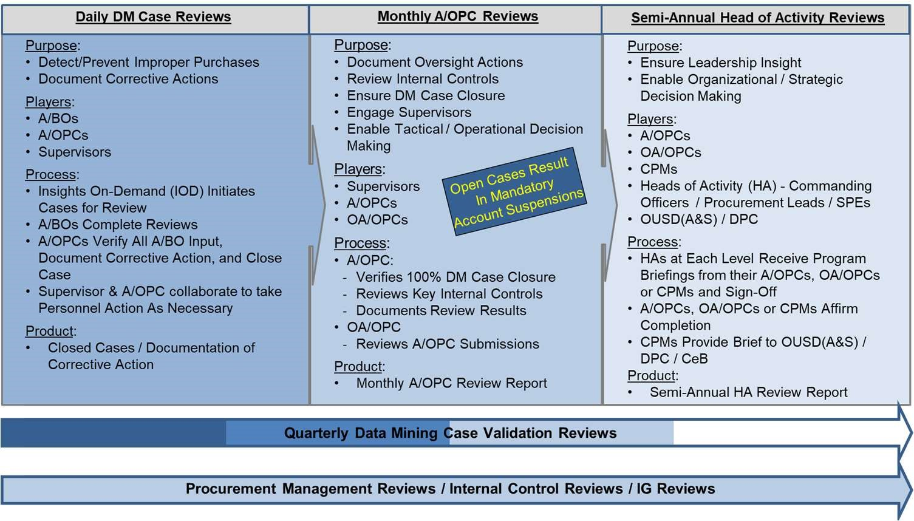

Chapter 11 - Management Controls and Program Oversight
11-1. Management Oversight Controls
a. DoD Instruction 5010.40, “Managers’ Internal Control Program Procedures,” 30 May 2013, requires DoD organizations to implement a comprehensive system of internal controls providing reasonable assurance that programs are operating as intended and to evaluate the effectiveness of the controls. Management and program oversight is conducted to achieve the following goals:
1) Validate and promote compliance with existing purchasing and management internal controls.
2) Identify, report, and resolve systemic material program weaknesses.
3) Measure the effectiveness of purchasing and management internal controls.
b. GPC management oversight controls are tools and activities that are used to identify, report, and address fraud, waste, and abuse. The Army GPC Program fully implements guidance and direction addressed in the April 18, 2019, OUSD Memorandum, “DoD SmartPay® 3 Government-wide Commercial Purchase Card policies, Procedures and Tools – SP3 Transition Memorandum #6.”
c. Data analytics. Data analytics is the application of electronic tools (software and/or systems) for automated data sorting, filtering and mining techniques using self-learning algorithms to search GPC transaction data in order to identify patterns, trends, risks, opportunities and other information. Data analytics and reporting tools are available as part of the GSA SmartPay® 3 Government-wide charge card program. Agencies have the ability to monitor their account transactions to identify any unusual spending patterns or frequency of transactions. Agency data analytics, in addition to the data analytics techniques already used by the banks to monitor account transactions, provide a multi-layered approach to help identify suspected fraud, misuse and delinquency. Data analytics can also be used to identify opportunities for expanded card use and associated benefits for the Army. A/OPCs should use data analytics tools to assist them in the management and oversight of their GPC program.
d. The Army uses preventive, detective, and directive controls to monitor the GPC program.
1) Preventive controls are designed to discourage errors or irregularities from occurring (e.g., processing a transaction only after it has been properly approved by the appropriate personnel).
2) Detective controls are designed to find errors or irregularities after they have occurred (e.g., IOD data mining, approving statements, and reconciling monthly invoices).
3) Directive controls are designed to encourage a desirable event (e.g., written policies and procedures to assist in compliance and the accomplishment of the goals and objectives of the GPC program).
e. Understanding internal controls assists GPC participants in their stewardship role in achieving GPC program objectives. Internal control is a process designed to provide reasonable assurance regarding the achievement of objectives in the following categories: effectiveness and efficiency of operations, reliability of financial reporting, and compliance with applicable laws and regulations. This understanding provides an additional reference tool for all GPC participants to identify and assess operating controls, financial reporting, and legal/regulatory compliance processes and to take action to strengthen controls where needed. Over time, controls may be expected to change to reflect changes in the operating environment. In order to achieve a balance between risk and controls, internal controls should address exposure to risk and be proactive, value-added, and cost-effective.
f. Identifying Fraudulent, Improper and Abusive Purchases. Designing and conducting procedures specifically for the purpose of detecting such transactions (e.g., IOD data mining) serves multiple purposes, including the potential discovery of a previously unrecognized risk in the program. Repeated non-adherence to established internal control policies and procedures, such as inadequate documentation of purchase card transactions or supervisory reviews, if allowed to continue, would contribute to erosion and weakening of the GPC internal control system. Prompt administrative and disciplinary actions can be effective in reducing persistent lack of adherence to policies and procedures by CHs and other program officials.
g. The SCO and A/OPCs are responsible for adhering to the requirements specified in OMB Circular A-123, Management’s Responsibility for Internal Control. This circular provides guidance on improving the accountability and effectiveness of GPC programs and operations by establishing, assessing, correcting, and reporting on internal control, as well as prescribing policies and procedures to agencies regarding how to maintain internal controls that reduce the risk of fraud, waste, and error in GPC programs.
h. The SCO and A/OPCs are also responsible for adhering to the requirements specified in 10 USC 4754 (as modified by Public Law 112–194, Government Charge Card Abuse Prevention Act of 2012). These statutory requirements mandate the following actions (list not comprehensive):
1) Using effective systems, techniques, and technologies to prevent or identify improper purchases.
2) Invalidating GPCs from each employee who ceases to be employed by the Government or separates from Military Service.
3) Taking steps to recover the cost of any illegal, improper, or erroneous purchases made with a purchase card or convenience check made by an employee or member of the armed forces, including, as necessary, through salary offsets.
4) Taking appropriate adverse personnel actions or imposing other punishments when employees of the Army violate regulations governing the use and control of purchase cards and convenience checks or who are negligent or engage in misuse, abuse, or fraud with respect to a purchase card, including removal in appropriate cases. Violations of such regulations by a person subject to 10 USC Chapter 47, the Uniform Code of Military Justice (UCMJ), is punishable as a violation of section 892 of article 92 of the UCMJ.
5) Requiring the Army Audit Agency to conduct periodic audits or reviews of GPC programs to identify and analyze risks of illegal, improper, or erroneous purchases and payments and report the result to the Director of the OMB and Congress.
i. A/OPCs must provide monitoring, oversight, training, and administration of all BOs and CHs. Supervisors and BOs are responsible for the monitoring and oversight of BOs and CHs under their purview.
j. To minimize losses to the Army, the program must have an expectation of high integrity and ethical behavior from all participants, and sufficient staff to perform the following functions:
1) Conduct periodic risk assessments to identify fraud, waste, and abuse and establish specific controls to reasonably ensure that losses from these risks are minimized, to include data mining.
2) Conduct proper training and complete reporting and data analysis to ensure personnel have the skills and information needed to be effective in their positions.
3) Conduct detailed, effective management and oversight.
4) Implement corrective actions when cardholder management is non-compliant with Army policies and procedures.
k. Monitoring and oversight of the GPC is a shared responsibility. All stakeholders in the program, including Resource and Financial Managers, logistics, contracting, and local audit and oversight organizations, are responsible for ensuring that the GPC is used in the proper manner and only authorized and necessary official purchases are made. Organizations should develop and follow a monitoring and oversight plan that establishes frequencies, methods, participation, etc., on how their monitoring/oversight programs will operate.
l. DPC issued several SP3 Transition Memorandums on GPC monitoring and oversight. DPC will rely on the signed Semi-Annual HA data provided by CPMs to accomplish DoD GPC reporting required by OMB. DPC updates visual trending of statistical and violation information to identify trends in GPC use and variances and shares this information with the Army during the GPC CPM Monthly Calls.
m. The GPC Integrated Solutions Team (IST) is DoD’s GPC governance body. IST membership consists of a GPC Governance Board composed of representatives from DPC, Army, Navy, Air Force, other Defense agencies, and supported by the bank team. The bank team consists of U.S. Bank (card-issuing bank), MasterCard (card association), and Oversight Systems (data mining vendor). The IST typically meets semi-annually to achieve the following:
1) Review trends and changes in the GPC industry and the DoD GPC Program.
2) Identify and approve any necessary adjustments to the bank team's electronic capabilities, DoD’s GPC enterprise tools, and/or DoD GPC policies.
3) Identify and approve changes to the DM rules and system parameter settings.
4) Bring efficiencies to the Program by adjusting the business rules/parameters based on transaction risk.
5) Review trends and changes in the GPC industry and the DoD GPC Program.
6) Identify any necessary adjustments to the bank team's electronic capabilities, DoD’s GPC enterprise tools, and/or DoD GPC policies.
7) Identify and approving changes to the Data Mining rules.
8) Review relevant data mining case information and recommendations provided by the bank team (e.g., percentage of data mining cases created for review; frequency with which each rule is triggered and associated DM case disposition, and information about the findings, determinations, and corrective actions identified) and results of the Semi-Annual HA process to inform its decision making.
11-2. Internal Management Controls
a. Management officials are responsible for establishing a system of internal controls that provides reasonable assurance that the GPC program is efficiently, effectively, and legally achieving its purpose and complies with applicable laws and regulations.
b. Required internal management controls include the following:
1) Management Controls. GPC programs will evaluate the expected benefits and related costs of internal control activities.
2) Training. All GPC program participants will receive appropriate role-based training.
3) Delegation of Authority. GPC programs will clearly document Delegations of Procurement Authority beginning with a DFARS-designated Contracting Activity (DFARS PGI 202.101) down to each CH. Each program participant will receive and sign the delegation and appointment documents (e.g., Delegation of Procurement Authority letters, appointment letters, and DD Form 577) required for their role.
4) System Functional Responsibility Controls. Electronic systems used to support the DoD GPC program will segregate role-based capabilities and limit access to functions to only individuals with appropriate authority. The system will be able to identify who made any data/file content changes in the end-to-end GPC process.
5) System Access Security. Appropriate safeguards will be in place to control issuance of user IDs and access credentials to the EAS.
6) CH Account Initiation. Only personnel in the CH's supervisory chain are authorized to request the opening of a new CH account. This request must identify appropriate card parameters.
7) Authorization Controls. Appropriate spending limits, budget (i.e., credit) limits, and MCC access will be established and tailored to each CH account. Spending limits and MCC access should reflect historical buying patterns/ trends.
8) Purchase Log. All CHs maintain a purchase log on the servicing bank’s EAS unless a waiver is granted and signed by Army. If a waiver is granted, CHs will document purchase information for each GPC transaction in an electronic log in the automated system where the individual card transactions and billing statements are approved and certified for payment.
9) Maintain Positive System of Funds Control. Spending limits (such as single purchase and credit limits) are tied directly to the funding allocated for each card account (monthly, quarterly, and semiannually). Limits should be consistent with historical spending patterns to minimize Government exposure and ensure adequate funds availability. This control helps ensure that funding is available prior to purchases being made with the GPC.
10) Ensure Separation of Duties. Key duties must be assigned to different individuals to the greatest extent possible to minimize the risk of loss to the Government. Examples of key duties include making purchases (CH), authorizing payments (BO), certifying funding (Resource Managers), and reviewing and auditing purchase activity (A/OPC).
11) Span of Control. To ensure GPC program participants have sufficient time to complete required reviews, GPC programs will abide by established span of control limits.
12) Reconcile and Approve the CH Statement. During each billing cycle, CHs are required to match orders and reconcile the statement they receive from the issuing bank against the purchase card log in the bank’s EAS.
13) Reconcile and Certify the Managing Account Statement. After the CH has approved the statement, the BO must approve or reject each purchase made by CHs in the BO’s managing account. When the BO has reviewed each invoice, the BO, acting in the role of Certifying Officer, certifies the entire invoice as legal, proper, and correct. A/OPCs must track managing account certification after the end of the billing cycle.
14) Exercise Dispute Authority. Cardholders have 90 days from the date the transaction posted to the account to dispute the transaction, when needed.
15) Maintain Authorization Controls. A/OPCs must add the appropriate MCC filters to each CH account.
16) Ensure Systems Access Security. Appropriate safeguards must be in place to control issuance and safeguarding of access credentials to the EAS.
17) Ensure Available Funding Integrity. Certified LOAs must be traceable through disbursement. All changes to LOAs must be documented and certified.
18) Ensure Invoice Integrity. An electronic certification process ensures the original electronic invoice is traceable from the vendor through the certification and entitlement processes and retained in a Government record. Should the original invoice submitted by the contractor be in paper form, the Certifying Officer will determine if the invoice is proper for payment and affix his/her signature in accordance with the governing provisions of the DoD FMR. If appropriate, the Certifying Officer makes any required “pen and ink” changes on the original invoice to reallocate the payment to different funding lines from those reflected on the original invoice. The Certifying Officer determines whether these changes are proper and affix his/her signature with the standard certification language on the original paper invoice.
19) System Administration Integrity/Data Exchange/Transaction Security. Changes to the operating system environment will be documented in accordance with the DoD Information Assurance Certification and Accreditation (DIACAP) process.
20) Transaction Data Integrity. The original transaction/invoice will be maintained and cannot be altered.
21) Data Mining. Implement a data mining capability that reviews all GPC transactions.
22) Inactive and Purged Accounts. A/OPCs must perform an annual review of the ongoing need for existing card accounts. A/OPCs should terminate accounts with no activity for more than six months or document the need for the account to remain open. The servicing bank purges inactive accounts monthly, depending on the status of the account.
23) Terminated, Voluntarily Closed, and Fraud Referral status. Servicing bank purges the account after 13 months of inactivity.
24) Open status. Servicing bank purges the account after 21 months of inactivity.
11-3. Insights on Demand
a. Insights on Demand (IOD) is the SmartPay®3 data mining (DM) tool used to monitor purchasing activity and perform oversight functions. IOD provides the capabilities to identify high-risk transactions and unusual spending patterns; scan purchasing activity for misuse, fraud, waste, and abuse; and flag transactions for review. IOD data mining capabilities are used to evaluate 100% of the Army’s GPC transactions as directed in DoD SmartPay®3 Transition Memoranda #6 and #12. Instructions on how to navigate and perform functions in IOD are located in the servicing bank’s IOD user guides and quick references and in the Defense Pricing & Contracting – Contracting eBusiness website.
b. Insights on Demand is an artificial intelligence DM platform that automatically analyzes DoD’s GPC data to identify high-risk transactions. It enables the Army to fulfill the 10 USC 4754 (as modified by Public Law 112–194, Government Charge Card Abuse Prevention Act of 2012) requirement to “use effective systems, techniques, and technologies to prevent or identify improper purchases.” It also facilitates transaction reviews and enables documentation of any findings identified and corrective actions taken. GPC program officials must use IOD to perform the following actions:
1) Document Daily DM Case Reviews (includes BO DM Case Questionnaires and A/OPC DM Case Questionnaires), Monthly A/OPC Reviews (includes Monthly A/OPC Check List and Monthly A/OPC Review Report) and Semi-Annual Head of Activity (HA) Reviews (includes Semi-Annual HA Review Report).
2) Review all BO completed DM case reviews, and document any finding, determination, or corrective action taken by completing the A/OPC DM Case Questionnaire. Failure to complete required reviews in a timely manner may result in account suspensions.
3) Initiate and complete their reviews and close cases for each finding and disciplinary category determination they independently identify (i.e., not flagged by IOD) during their review processes.
c. IOD Terminology. IOD provides specific terminology and definitions in their reference document “IOD Case and Review Status Definitions and Workflow” as well as when referring to the various levels of A/OPCs.
1) “CPM” refers to the Component Program Manager or Level 2 A/OPC.
2) “O AOPC” refers to the Oversight A/OPC or Level 3 A/OPC.
3) “AOPC” refers to the Level 4 A/OPC.
11-4. Data Mining Case Review and Closure
DM case reviews enable documentation of any identified findings and corrective actions taken. DM case reviews include both system-generated cases and manually-added cases, which may be opened at management’s discretion. Cases must be opened for each finding and disciplinary category determination independently identified during compliance reviews. Monthly A/OPC Reviews are conducted to promote and measure compliance with purchasing and management internal controls and provide reasonable assurance of the effectiveness of these controls to mitigate program risk. Semi-Annual HA Reviews are conducted to ensure adherence to internal controls and facilitate senior management’s awareness of their GPC program’s health, and to help them promote the interdisciplinary communication necessary for successful GPC program operations. The use of an automated data mining system enables the Army to fulfill the 10 USC 4754 requirement to “use effective systems, techniques, and technologies to prevent or identify improper purchases.”
Figure 11-1: Three-Pronged Oversight Review Process


Integrated Solutions Team
a. DM Case Management. Oversight Systems’ IOD DM capability evaluates each transaction against a set of tiered business rules to identify high-risk transactions. Tier 1 rules are mandatory and applicable to all DoD purchase cards. Tier 2 rules are mandatory rules that can be tailored as necessary at the local level. DM cases can be system-generated or manually generated. The system generates a DM case whenever a business rule is broken. GPC program officials are required to manually create cases for each finding and disciplinary category determination they independently identify during their reviews. Each case is adjudicated to determine if the transaction is to be classified under one of five disciplinary categories standardized in compliance with the DPC memo “Final Governmentwide Commercial Purchase Card Disciplinary Category Definitions Guidance,” January 27, 2020. Disputes are also categorized as determinations.
b. Tier 2 Tailoring. Tier 2 business rules are tailorable to the cardholder level to meet the Army’s organizational needs. Tailoring must be consistent with requirements in the DoD Charge Card Guidebook. As part of the SAHAR process, Heads of Activity (HAs) are required to validate that any Tier 2 Tailoring of DM business rules are implemented appropriately. For more information, refer to GPC one-pager 3OP034, “Tier 2 Tailoring in Insights on Demand (IOD)” on the DPC GPC website. To properly manage program risk for these potentially high-risk transactions, IOD automatically selects a random sample of 1% of these Tier 2 “auto closed” cases and assigns them for adjudication (“1% Random Reopen”). The IST reviews Tier 2 Tailoring data sets and trends and considers methodology changes based on its findings.
c. Case Assignment and Review Process.
1) When a transaction is flagged for review, IOD generates a case and assigns it to the primary BO.
2) The BO reviews the CH’s file documentation in the bank’s EAS. The BO then locates the case in IOD and inputs requested data.
3) Once the BO has submitted their review, IOD assigns the case to the Level 4 A/OPC. The Level 4 A/OPC reviews the CH’s file documentation, inputs detailed comments regarding the purchase, identifies the applicable finding, and closes the case in IOD. The comments should provide information regarding the transaction and a detailed explanation of any findings. For administrative findings, the comments must state what documents or signatures were missing.
d. Case Review Timeframe. Cases must be resolved within 30 calendar days of the billing cycle end date.
1) Billing officials must complete their review of assigned IOD cases within 15 calendar days of the billing cycle end date. Billing officials are recommended to review IOD cases when certifying their monthly statement. A/OPCs may suspend the managing account if IOD cases are not reviewed within 15 days.
2) Level 4 A/OPCs must close cases within 30 calendar days of the billing cycle end date. Level 3 A/OPCs may notify the Level 4 A/OPC’s chain of command if cases are not closed within the required timeframe.
3) A/OPCs may add stricter controls regarding the timeline for completing IOD cases.
e. At their discretion, A/OPCs may flag additional transactions for review within IOD. Billing officials are required to review these additional cases as part of the normal case review process and timeline.
Table 11-1: Daily Data Mining Case Review Cycle
| Action | DM Case Review Cycle Milestones | Compliance Mechanism |
|---|---|---|
| IOD assigns cases daily for review | Throughout the billing cycle | Not applicable |
| Billing officials complete their review of assigned cases |
Billing officials should complete reviews throughout the billing cycle (rather than waiting until the end of the month) to promote timely resolution (e.g., transaction dispute, CH retraining). Reviews should be completed within 5 days of the billing cycle end date. Billing officials must complete reviews within 15 calendar days of the billing cycle end date. Note: Any case the A/OPC refers back to the BO for additional review may require action through day 30. |
Not applicable |
| A/OPCs review and close assigned cases |
A/OPCs must complete reviews within 30 calendar days of the billing cycle end date. Note: Any case the OA/OPC refers back to the BO for additional review may require action through day 30. |
A/OPCs may suspend managing accounts with open DM cases 15 days after billing cycle end date. OA/OPCs must suspend managing accounts with open cases 30 days after the billing cycle end date. |
11-5. Monthly A/OPC Reviews
A/OPCs and CPMs must complete monthly reviews within IOD to promote and measure compliance with internal controls and provide reasonable assurance of the effectiveness of these controls to mitigate program risk. A/OPCs and CPMs are required to complete monthly review(s) each billing cycle. IOD automatically assigns and generates monthly reviews, which become available for completion once all transactions for that agent and billing cycle have been closed. Monthly reviews are considered complete only if 100 percent of all cases selected during the billing cycle have been adjudicated.
a. A/OPC Monthly Review. Level 4 A/OPCs must complete this review once all BOs have completed all cases assigned to them. The A/OPC reviews the internal controls summary and inputs requested data in IOD. Level 4 A/OPCs will complete monthly reviews within 30 days of the billing cycle end date. A/OPCs must also perform a summary assessment (e.g., using bank reports) of 100% of transactions made during the billing cycle to ensure awareness of purchasing activity and identify purchasing and behavior patterns not otherwise identified by IOD. A/OPCs must also ensure that cases are created for each finding that they identify independently (i.e., not automatically flagged by IOD).
b. OA/OPC Monthly Review. Level 3 A/OPCs must complete this review once all Level 4 A/OPCs assigned to them have completed their monthly reviews. The A/OPC reviews the internal controls summary for their program and concurs with the findings, determinations, and any corrective actions planned or taken. Level 3 A/OPCs are also required to spot-check the monthly reviews conducted by their Level 4 A/OPCs. Level 3 A/OPCs will complete monthly reviews within 10 calendar days of their Level 4 A/OPCs’ completion.
c. CPM Monthly Review. CPMs (Level 2 A/OPCs) must complete this review once all Level 3 A/OPCs assigned to them have completed their monthly reviews.
d. If a monthly review cannot be completed because the BO or A/OPC and their alternates are deployed and have insufficient access to IOD, the Level 3 A/OPC may mark them as “Deployed” in IOD and give approval to complete the monthly review.
Table 11-2: Monthly A/OPC Review Cycle Dates
| Action | Review Cycle Milestones | Compliance Mechanism |
|---|---|---|
| Level 4 A/OPC completes the monthly review and A/OPC Monthly Checklist in IOD | Cycle End Date + 30 days | Not applicable |
| Level 3 A/OPC completes the OA/OPC Monthly Review and certifies completion in IOD | Cycle End Date + 40 days | OA/OPCs may suspend the appropriate account(s) at 30 days if DM cases and A/OPC Monthly Reviews are not complete. |
| CPM completes review and certifies completion in IOD | Cycle End Date + 55 days | CPM suspends appropriate account(s) at 55 days if DM cases and A/OPC Monthly Reviews are not complete. |
11-6. Semi-Annual A/OPC Reviews
A/OPCs and CPMs must complete semi-annual reviews within IOD to ensure adherence to internal controls, facilitate senior management’s awareness of their program’s health, and promote the interdisciplinary communication necessary for successful GPC program operations. Semi-annual reviews will be performed in IOD at the end of the March and September billing cycles. They are a consolidation of the previous six monthly reviews (20 March to 19 September and 20 September to 19 March each year).
a. A/OPC Semi-Annual Review. Level 4 A/OPCs must complete this review once all six prior monthly reviews have been completed. The A/OPC reviews the internal controls summary and inputs requested data for all applicable agents.
b. OA/OPC Semi-Annual Review. Level 3 A/OPCs must complete this review once all Level 4 A/OPCs assigned to them have completed their semi-annual reviews. The Level 3 A/OPC reviews the internal controls summary for their program, concurs with the findings, determinations, and any corrective actions planned or taken, and affirms that they have briefed results to the Head of the Activity (HA).
c. CPM Semi-Annual Review. CPMs (Level 2 A/OPCs) must complete this review once all Level 3 A/OPCs assigned to them have completed their semi-annual reviews.
d. Semi-Annual Head of the Activity Briefing and Report. A/OPCs and CPMs are required to perform the following actions:
1) Brief semi-annual review results to their HA and inform the HA of program strengths and concerns. Conduct the briefing before completing their semi-annual review in IOD.
2) Generate the Semi-Annual HA Review Report in IOD and obtain the HA’s signature on this report.
3) Provide a scanned version of the signed report and other review documents (as applicable) to the A/OPC at the next level above them in the hierarchy.
4) Certify completion by submitting the semi-annual review in IOD.
5) Retain final signed documents.
Table 11-3: Timeframe for IOD Monthly and Semi-annual Reviews
| Monthly Review Completion Timeframe | |
|---|---|
| Role | Days after Cycle End Date |
| A/OPC (Level 4) | 30 |
| O/AOPC (Level 3) | 40 |
| CPM (Level 2) | 55 |
| Semi-annual Review Completion Timeframe | |
| Role | Completion Date |
| A/OPC (Level 4) | 1 June / 1 December |
| O/AOPC (Level 3) | 30 June / 31 December |
| CPM (Level 2) | 15 July / 15 January |
e. IOD Reports. A/OPCs can run various reports based upon their role in IOD. These reports assist the A/OPC in identifying GPC program trends, strengths and weaknesses, and will be monitored and used in conjunction with conducting GPC annual surveillance.
11-7. Fraud Overview
Fraud can be defined as a deception deliberately practiced with the motive of securing unfair or unlawful gain. Fraud can be an attempt to cheat the Federal Government and corrupt its CHs by using GPC accounts for transactions not part of official Government business. Fraud can come in many disguises, such as false emails, mail, or phone calls. The following are the three primary categories of fraud:
1) Non-cardholder Fraud. Examples: Lost or stolen card, account takeover, and identity theft.
2) Cardholder Fraud. Examples: Kickbacks, falsified transactions, and false statements.
3) Merchant Fraud. Examples: False transactions, intentional mischarges, bribes, and gratuities.
11-8. Non-Cardholder Fraud
a. Non-cardholder fraud involves the use of the card account or CH data by an unauthorized person. Non-cardholder fraud is investigated by special units within the servicing bank. Any information acquired relating to non-cardholder fraud should be reported. The risk of non-cardholder fraud is higher in certain situations including the following:
1) Account/Card never received. A new or replacement card has been mailed to the account holder but was not received. This may be due to a third-party interception. In this case, the account should be cancelled, and new card issued.
2) Lost or Stolen Account/Card. If the account holder reports the account as lost or stolen, the account will be cancelled and new one issued. Reporting the account as lost or stolen does not relieve the Federal Government for payment for any transactions that were made by the account holder prior to losing it. If transactions not made by the account holder appear on the statement, the account holder has 90 days from the date of the transaction to file a dispute. If it is not done within 90 days, they may forfeit their rights to dispute.
3) Altered or counterfeit cards. This occurs when third parties obtain account information and used that information to make purchases with an altered or counterfeit card. If the banks recognize a fraudulent pattern of use at the time of authorization, the bank will validate the use of the account with the account holder and/or suspend the account. If transactions not made by the account holder appear on the statement, the account holder has 90 days from the date of the transaction to file a dispute. If it is not done within 90 days, they may forfeit their rights to dispute.
4) Account takeover/ Identity theft. In this case, the account holder’s identity has been compromised and a third party has requested a new account by providing confidential information about the account holder. Any account holder who believes that he or she may have been subject to identity theft should contact the bank’s customer-service department. Once a determination is made that an account has been compromised, investigation is the responsibility of the bank. Unless a Government employee is determined to be involved in the fraud, the agency generally does not participate in the investigation. The account will be closed, and a replacement account opened.
b. Non-Cardholder Fraud Methods. Some of the different methods of fraud include the following:
1) Counterfeit Accounts. To make fake cards, criminals use the newest technology to “skim” information contained on magnetic stripes of cards and also to pass security features (such as holograms).
2) Lost or Stolen Accounts. Physical cards are stolen from a workplace, gym or unattended vehicle.
3) Card Not Present. Internet fraud occurs whenever account information is stolen and used to make online purchases. Merchant asks for the CVC code (located on the back of the card) to help prevent this type of fraud.
4) Phishing. Phishing occurs whenever a CH receives a fake email directing him or her to enter sensitive personal information on a phony website. The false website enables the criminal to steal information from the account holder.
5) Non-Receipt. This type of fraud occurs whenever new or replacement cards are mailed and then stolen while in transit.
6) Identity Theft. A criminal applies for an account using another person’s identity and information.
c. Detecting Non-Cardholder Fraud. One of the first signs that an individual is a victim of fraud is at least one “mystery expense” showing up in the monthly statement. To help detect fraud, cardholders should review their statement by performing the following actions:
1) Look for transactions you do not recall making.
2) Check for unknown vendors.
3) Search for account withdrawals you do not remember making.
d. Avoiding Non-Cardholder Fraud. Cardholders should use the following practices to avoid fraud:
1) Secure account number and information.
2) Safeguard your personal identification number (PIN). Do not write it down; memorize it. Do not share your PIN.
3) Monitor your card during transactions. When the card is returned, check to make sure it is yours.
4) Immediately report lost or stolen accounts and/or any questionable charges.
5) Sign the back of a new card as soon as you receive it. If you do not receive a replacement card before the expiration date of the older card, contact the bank.
6) Destroy unwanted or expired cards. Shred or secure monthly statements and receipts.
7) Electronically verify charges appearing on your monthly statement.
8) Unless you initiated the purchase, never give your account information over the telephone, through the mail, or on the internet.
9) Consistently check your account for accuracy of personal and billing information. Notify the bank if your personal information and/or address needs updating.
10) Never let a telemarketer or salesperson pressure you into agreeing to a deal.
11) Be aware of common scams and contact your A/OPC and the bank for unusual situations.
e. If Non-Cardholder Fraud Occurs. If fraud is detected on the account, the CH must immediately report the incident to the following: BO, A/OPC and servicing bank. The servicing bank will block and/or terminate the account. If necessary, the bank will then issue a new card with a new account number. Also, the bank will mail a “Statement of Fraud” letter to the cardholder, which must be completed and returned promptly. Sometimes, unauthorized transactions will appear on the billing statement, even though the account was reported lost or stolen. Cardholders should report all unauthorized transactions by calling the bank's customer service telephone number.
11-9. Cardholder Fraud and Merchant Fraud
a. Cardholder Fraud, Misuse and Abuse. This type of fraud occurs when a cardholder uses their account to transact business that is not sanctioned, not authorized, not in one’s official Government capacity, not for the purpose for which the card was issued, and/or not as part of official Government business. Intentional use of a Government account for other than official Government business constitutes misuse, and depending on the situation, may constitute fraud.
Figure 11-2 Violation Category Decision Framework
b. Consequences of Cardholder Fraud. Cardholders have a responsibility to use the account to procure supplies and services at the direction of the Army under official purchase authorization. If a CH misuses the GPC or participates in fraud, the Army may cancel the purchase account and take appropriate disciplinary action against the CH. In the case of account misuse, the employee will be held personally liable to the Federal Government for the amount of any unauthorized transaction. Depending on the facts involved, an employee may be subject to fine or imprisonment for action relating to purchase account misuse and fraud. There are guidelines and procedures for disciplinary action to be taken against individuals for the improper, fraudulent, or abusive use of the purchase account. Purchase account misuse/fraud may have the following potential consequences:
1) Counseling
2) Cancellation of card account
3) Notation in employee performance evaluation
4) Reprimand
5) Suspension of employment
6) Termination of employment
7) Criminal prosecution
c. If Cardholder Fraud Occurs. If an A/OPC suspects that a BO or CH has committed fraud, the A/OPC can file a complaint with the Army Inspector General. Investigations are initiated upon receipt of a complaint or other information that gives a reasonable account of the wrongful or fraudulent act. The DoD hotline phone number is 800-424-9098 to report fraud. A/OPCs should be as specific as possible when reporting fraud. The following information should be provided:
1) Employee's full name
2) Rank or pay grade
3) Duty station
4) Specific suspected fraudulent act or wrongdoing
5) Specific dates and times
6) Specific location of where the suspected fraudulent act occurred
7) How the individual completed the alleged fraudulent act
d. Merchant Fraud. This type of fraud is committed by the merchant. Merchant fraud can occur either with or without the CH’s knowledge or consent. Rotating sources may help prevent this type of fraud. Billing errors, such as duplicate charges, are not considered merchant fraud. Examples include:
1) A vendor intentionally charges for items not delivered/services not performed.
2) A vendor offers bribes and gratuities to a Government employee in exchange for gaining purchasing activity.
11-10. Reporting and Monitoring for Fraud
a. Reports for Identifying and Preventing Fraud. A/OPCs should use the following reports to identify potential card misuse and fraud and to prevent fraud from occurring:
1) Declined Transaction Authorizations Report. This report identifies cardholders who have attempted to use an account to buy an item for which they are not authorized, that exceeds their single purchase limit, that exceeds their monthly purchase limit, or from a merchant that falls under a blocked MCC.
2) Transaction Detail Report. This report identifies the date, merchant, reason code, dollar amount, and status of each dispute filed by CH. BOs and A/OPCs should track and follow up on disputes to determine their outcomes. Cardholders should attempt to resolve disputes directly with merchants prior to filing a disputes report. If a merchant is consistently appearing on the disputes report, the A/OPC should determine whether the merchant may have billing issues, quality issues, or is attempting to commit fraud by submitting false transactions.
3) Unusual Spending Activity Report. This report identifies transactions that may warrant further review.
4) Account Status Change Report. This report lists accounts with a change status of lost/stolen, closed, or reopened accounts. This status may either be an indicator that the CH needs to secure the account or that the CH is attempting to disguise misuse or fraudulent activity by denying the charges.
b. Reporting Fraud. All identified instances of suspected fraud or abuse must be reported. Various channels of reporting include the Chain of Command, the A/OPC, the command’s procurement fraud advisor (Staff/Command Judge Advocate), the servicing Criminal Investigation Division office, internal review organizations, and Inspector Generals at all levels. When a Defense criminal investigative organization or Defense organizational element responsible for investigating potential misconduct involving the GPC initiates an investigation into allegations of charge card violations regarding a GPC, the CH’s commander or second-line supervisor, as appropriate, and security manager must be notified. Whenever possible, this notification should take place within 72 hours of the initiation. See DoD Charge Card Guidebook A.1.11.
11-11. Violation and Disciplinary Categories
a. Identifying the Violation. DoD’s GPC Disciplinary Category Definitions Guidance is a helpful resource when identifying the type of violation in situations of card misuse and abuse. See Table 11-4 below.
b. A/OPCs should be alert to the following indicators of possible fraud, waste, or abuse:
1) Repetitive buys from the same merchant
2) Lack of documentation for a purchase
3) Failure to safeguard cards and account numbers
4) CH or BO authorizing the use of their cards by others
5) Inadequate oversight by BOs and agencies
6) Payments made for items not received
7) Split purchases to avoid spending limitations
8) Lack of accounting for items requiring accountability
9) Payment delinquencies incurring interest penalties
10) Approval of a CH’s statement of account by someone other than the CH or BO
11) Unauthorized purchases
12) CHs returning merchandise for cash or store credit vs. having credits issued back to the GPC
c. Taking Corrective Action. When an A/OPC discovers a violation of GPC policies, the A/OPC must take corrective action. The course of action will vary depending on the intentionality and severity of the infraction. A/OPCs should take one or more of the following corrective actions:
1) Document the violation in the purchase file and/or CH or BO’s file.
2) Require involved parties to attend training.
3) Inform the involved parties’ supervisor or commander.
4) Suspend CH or BO account.
5) Terminate CH or BO appointment and account.
d. Continual or Severe Violations. Continual violation of GPC procedures by a CH or BO will result in termination of GPC privileges. A/OPCs will document the violation and action taken in their files for that particular CH/BO. A/OPCs will refer evidence of deliberate abuse to the CH and/or BO’s supervisor, Commander, or SCO for appropriate action in accordance with the Uniform Code of Military Justice or civilian disciplinary rules. A/OPC will refer evidence of internal fraud or other criminal activity to the Commander or SCO.
Table 11-4: Disciplinary Categories
| Category | Reportable | Classification | Definition | Examples |
|---|---|---|---|---|
| Abuse | Yes | Intentional |
Intentional use of the Government- issued charge card in violation of applicable regulations. Evidence of intentionality will be inferred from repeat offenses of the same violation, following administrative and/or disciplinary action taken for this violation. Applicable regulations are: FAR, DFARS, Service/Agency Supplements, and Component GPC policies/procedures. |
Examples include, but are not limited to, intentionally failing to purchase from mandatory sources, exceeding the applicable MPT, purchasing items such as a day planner costing $300 rather than one costing $45, or splitting requirements to avoid card thresholds. |
| Internal Fraud | Yes | Malicious Intent | Any felonious act of corruption or attempt to cheat the Government or corrupt the Government’s agents by Charge Card Program officials. Use of the charge card to transact business that is not sanctioned, not authorized, not in one’s official Government capacity, not for the purpose for which the card was issued, not as part of official Government business. | Examples include, but are not limited to, a CH intentionally purchasing power tools for personal use, paying for repairs of privately owned equipment, purchasing items or extra quantity of items for resale or to give away to relatives. |
| Misuse | No | Unintentional |
Unintentional use of a GPC in violation of applicable regulations. These actions are the result of ignorance and/or carelessness, lacking intent. Applicable regulations are: FAR, DFARS, Service/Agency Supplements, and Component GPC policies/procedures. |
Examples include, but are not limited to, unintentionally purchasing excessive quantities of an item with limited shelf life, violating a specific-use policy such as an agency that requires headquarters to buy all furniture, failing to certify statements on time, costing the Government maximum rebates and incurrence of prompt payment interest. |
| Delinquency | Yes | N/A | An undisputed charge card account balance that is unpaid for more than 61 days past the statement date. | N/A |
| Administrative Discrepancy | No | Unintentional |
Actions that violate operational policies/procedures but do not violate federal law or regulation. Supplies/services acquired fulfill a valid Government need at a fair and reasonable price at no additional cost to the Government but required policy/procedures were not followed. |
Examples include, but are not limited to incomplete forms and documentation, failure to maintain required documents for the required time period. Administrative discrepancies require agency/internal corrective action and are not reportable to OMB unless they are persistent, pervasive, or willful in nature, in which case they are reportable as abuse, fraud, or misuse. |
| External Fraud | No | Malicious Intent | Any felonious act of corruption or attempt to cheat the Government or corrupt the Government’s agents by someone other than Charge Card Program officials. | Examples include but are not limited to a merchant’s intentional charges for services not provided or the unauthorized use by a third party of a CH’s compromised or stolen account. |
e. Any misuse of the GPC is subject to criminal, civil, Uniform Code of Military Justice, administrative, and disciplinary actions as appropriate. Offenses and penalties for misuse of Government Charge Cards by civilian employees is outlined in Table 3-1 Item 17 of AR 690-752 titled “Civilian Personnel Disciplinary and Adverse Actions.” See below for details. The Table of Offenses and Penalties guidance below is intended for use as a guide for selecting an appropriate penalty for infractions committed by civilian employees as it may not effectively address all situations. Table 11-5 does not substitute for independent supervisory judgment and does not dictate penalties. A supervisor may choose the severity of action ranging from no penalty, informal disciplinary actions, to the maximum penalty of removal.
Table 11-5: Offenses and Penalties Guidance
| Offense for Misuse of Government Charge Card | First Offense | Second Offense | Third Offense |
|---|---|---|---|
| Misuse of Government Travel Charge Card or Purchase Charge Card (for example, use for unauthorized personal expenses, failure to pay charge card bill in a timely manner, failure to properly safeguard the card or failure to use card for required expenses arising from official travel. Use of the Travel Charge Card at establishments or for purposes that are inconsistent with the official business of DoD, the Army, or applicable regulations). | Written reprimand to removal | 5-day suspension to removal | 10-day suspension to removal |
| Unauthorized use, failure to appropriately control or safeguard the use of a Government Purchase Card as a card holder or approving official responsible for use or oversight of the purchase card. | Written reprimand to removal | 14-day suspension to removal | Removal |